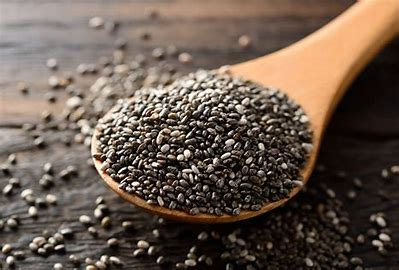
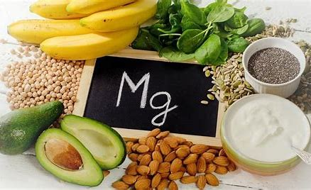
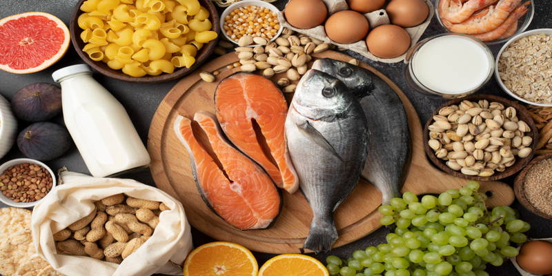

Chía: Pequeñas Semillas, Grandes Beneficios
Las semillas de chía son un verdadero superalimento: ricas en omega-3, fibra y antioxidantes, te ayudan a tener más energía, mejorar la digestión y sentirte saciado por más tiempo. Además, favorecen la salud del corazón y la hidratación del cuerpo.
Agrégalas a tus batidos, yogures o ensaladas y disfruta de todos sus beneficios en cada bocado. ¡Nutre tu cuerpo con lo mejor de la naturaleza!

Magnesio: El Mineral Esencial para tu Bienestar
El magnesio es un mineral fundamental para la salud, involucrado en más de 300 funciones en el cuerpo.
Ayuda a reducir el estrés y la fatiga, mejora la calidad del sueño, fortalece los músculos y huesos,
y favorece el buen funcionamiento del corazón. Además, contribuye a un metabolismo equilibrado y
al bienestar mental.

Vitamina D: Clave para huesos fuertes y defensas firmes
La vitamina D es fundamental para la salud ósea, la función inmunológica y el bienestar general.
Ayuda en la absorción de calcio y fortalece el sistema inmunológico.
También está relacionada con la regulación del estado de ánimo y la energía.
Se obtiene principalmente a través de la exposición al sol y ciertos alimentos, además de estar disponible en suplementos.
Mantener niveles adecuados de vitamina D es clave para una buena salud.
